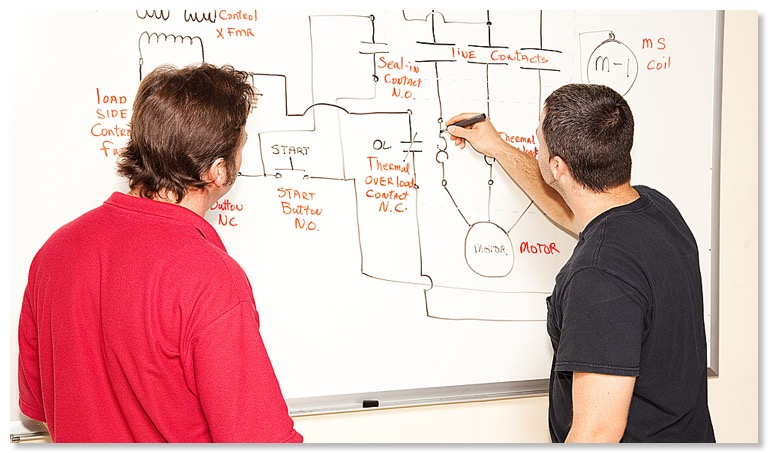

When it comes to making the most of any investment in new training
facilities and resources, Professional Staff Development is a must.
Our factory-trained engineers will carry out the installation and
training at your site. This will give an opportunity for your
technical personnel to follow closely and become fully involved in
the installation and commissioning should it be required.
Typically
the installation will be carried out over a 3-day period and it will
be followed by a training session, which would take, between 5-7
working days. The training will start with the basic overview of the
system and then each module will be covered individually in
detail. Various training scenarios will be explored and we
always encourage a hands-on approach where the trainees will be
working closely with the equipment under the close guidance of our
trainer.
Usually, training will cover use of each of the
individual modules in the lab. Once the individual modules are
covered in detail, the training will then focus on the various
scenarios that can be used to configure different sub systems and
finally the complete end-to-end system. Again, the focus will be on
simulating various real life scenarios.
The training
session will end with a test for the trainees and certificates will
be given to the trainees after the completion of the training.
Refresher Training
Our main focus is on customer satisfaction and a key feature of our
training is that we conduct a refresher on-site training session
after a 6-month period. This is to ensure that the system is used to
its optimum capacity and any possible doubts or questions can be
addressed.
We will also use the visit of the trainer to
conduct a check on the hardware and software system for any small
adjustments if required. Wherever it is relevant, we make use of the
TSI eLearning when it is supplied as part of the package.
The inclusion of a large wall-mounted interactive
display makes this a valuable training tool. It also illustrates how
the instructor can make best use of the available resources with
their trainees.